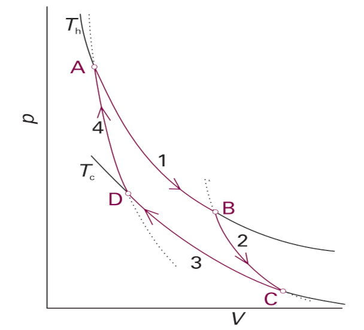

Ya mencionamos que un ciclo ideal, es decir, reversible, sobre una isoterma no puede producir trabajo ya que el trabajo de expansión será igual al de compresión. Se necesitan, al menos dos fuentes de calor con distinta temperatura. Sadi Carnot, a principios del siglo 19 llegó a la conclusión de que la eficiencia de una máquina térmica ideal depende exclusivamente de esas dos temperaturas. Rudolph Clausius, en 1824, retomó el trabajo de Carnot para concluir matemáticamente que hay un flujo natural del calor.
El ciclo Carnot
Carnot propuso su máquina ideal con procesos reversibles y dos fuentes de temperatura usando dos expansiones, isotérmica (1) y adiabática (2) y dos compresiones, isotérmica (3) y adiabática (4).

\(T_h\)
El ciclo Carnot detallado
Recordemos que, por tratarse de un ciclo, tendremos \(0 = Q_C + W_C \) ya que \(U\) es una propiedad de estado y si las condiciones finales del sistema son iguales a las iniciales tendremos \(\Delta U =0 \). Añadamos que dos etapas son adiabáticas, la 2 y la 4, por tanto \(Q_2 = Q_4 = 0\) en tanto que \( W = W_1 + W_2 + W_3 + W_4\); además, en las etapas 2 y 3 tenemos:
\[ \Delta U_2 = W_2 \quad\quad \Delta U_4 = W_4 \quad \therefore\quad W_2 + W_4 = 0 \]
La energía interna de un gas ideal depende exclusivamente de la temperatura, en este caso la temperatura inicial en 2 es Th y la final es TC , y es también la inicial en 4; la temperatura final en 4 es Th con lo que \(\Delta E_2 + \Delta E_4 = 0\)
Eficiencia de la máquina térmica ideal
Como es usual, la eficiencia para la máquina térmica también se define como ganancia/inversión, esto es (trabajo obtenido)/(energía invertida):
\[ \eta = \frac{W_{cic}}{Q_1} \]
Nótese que \( Q_3\) es energía desperdiciada y corresponde al trabajo invertido en la compresión del gas.
Omitimos el desarrollo algebraico que lleva a los siguientes resultados:
\[ W_{cic} = n R (T_c- T_h) \ln \frac{V_B}{V_A} \quad\mbox{y} \quad Q_1 = nRT_c \ln \frac{V_B}{V_A} \]
\[ \therefore \quad \eta = \frac{T_c - T_h}{T_c} \]
Nótese que el signo de la expresión anterior es negativo pues el sistema libera energía mecánica a los alrededores.
Todas las máquinas que emplean combustible están sujetas a la expresión anotada para la eficiencia: ésta depende de las temperaturas del reservorio que suministra el calor y la del reservorio que lo recibe; cuanto mayor sea la diferencia mayor la eficiencia.
Trabajo y calor
En 1848, James Prescott Joule escribió:
"Me parece que una teoría de la máquina de vapor que no admita la conversión de calor en trabajo conduce a una conclusión absurda. Por ejemplo, consideremos una cantidad A de combustible que eleva en 1°C a 1000 libras de agua. Una teoría que NO admita lo dicho llevaría a que la misma cantidad produjera trabajo mecánico, además del aumento dicho de temperatura. Ese trabajo se podría emplear en una máquina que agite 100 lb de agua (por decir una cantidad) y elevando su temperatura en 1°C. En consecuencia, la misma cantidad A de combustible aumentará la temperatura de 1100 libras de agua. La conclusión es que la máquina que agita las 100 lb de agua produce calor de la nada, lo cual me parece contrario a toda analogía y a toda razón".
Obra publicada con Licencia Creative Commons Reconocimiento Compartir igual 4.0